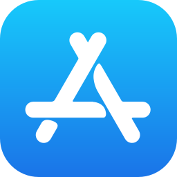

About
I’m a product manager. Thirteen years of building software for warehouses, e-commerce apps, and the systems that keep both running. Nike is my current employer; before that I was at PUMA, Hopscotch, and Decathlon.
The common thread is unglamorous. I build for people whose jobs actually depend on the thing working — the associate picking an order at 2am, the shopper on a flaky connection, the ops manager trying to work out why one DC is down 3%. If a feature doesn’t land for them, I don’t much care how clean the roadmap slide was.
Now
Day job: leading Pack & VAS product for Nike’s distribution centers in Europe, Australia, and Japan. On the side, chairing intake and the Product Council for Supply Chain Planning technology — which is mostly a lot of trade-off conversations with squad leads.
I’m also putting real time into AI-native tooling. Using LLMs and MCP servers to drop discovery and prototyping from weeks to days. Partly because it genuinely makes me faster, partly because I think PMs who don’t learn this well over the next twelve months will be at a real disadvantage.
A newsletter for operators is the slow-burn personal project. Email me if you want it in your inbox when it launches.
Experience
-
2026 — nowNikeLead Technical Product Manager · Supply Chain Planning Technology · Bangalore
-
2022 — 2026PUMA IndiaSenior Product Manager · Owned & Operated E-Commerce · Bangalore
-
2021HopscotchSupply Product Manager · Bangalore
-
2013 — 2021DecathlonProduct, E-Commerce & Engineering roles · India, Sri Lanka, France
Expertise
Product leadership
Set the strategy, sequence the work, and own the trade-off conversation end-to-end — at multi-product, multi-geography scope with both VP-level and front-line operator exposure.
Technical product
Where operator problems meet systems — distribution-center software, platform integrations, and the event-driven plumbing that lets fulfillment, order management, and warehouse control talk to each other without edge cases.
Growth & commerce
App and web conversion, personalization, payments, and the full analytics stack behind them — from a global commerce app launch, to hybrid search & recommendations at retail scale, to multi-country GA4 migration.
AI-native practice
AI as leverage for the PM job itself — LLM- and MCP-integrated tooling that compresses discovery, prototypes to high-fidelity in hours, and lifts PRD quality through structured prompt patterns.
Methods
The craft — how ideas move from signal to shipped. I write things down, measure before I argue, prefer directness, and keep opportunity cost in every prioritization conversation.
Tools I’ve worked with
Platforms I’ve shipped with across supply chain, commerce, mobile, analytics, and AI — sometimes as the product owner, sometimes as the integrator stitching them into a larger system.



On product management
What the job actually is
After thirteen years of doing this, I’d describe the job plainly: choose what to build next, and be around when the numbers come in to defend or disown the choice. The rest — specs, roadmaps, standups, OKRs — is scaffolding that helps the choice get made and remembered.
It gets much easier when the choice is written down with the trade-off and the opportunity cost in the same paragraph. That way the decision still makes sense three months later when someone new joins the team and asks why.
Reading the lifecycle
Every product is somewhere on the lifecycle curve, and the job changes a lot depending on which stage you’re in. A lot of the roadmaps I’ve seen go wrong because the team is running an “introduction” playbook on a “maturity” product, or vice versa.
The operating loop
I think of a product org as four loops running in parallel:
- Discovery — turning a vague business goal into a concrete, falsifiable problem worth solving.
- Decision — ranking candidate problems against capacity, risk, and reversibility.
- Delivery — shipping something small enough that the team can actually learn from it.
- Measurement — reading what the data actually says, not what we hoped it would say.
When one of those loops breaks, the others get louder to compensate, and the whole team slows down without quite understanding why.
Where great PMs spend their time
Mostly, not on tickets. The best PMs I’ve worked with concentrate at the two ends of the loop. The discovery end, actually talking to users and framing the real problem. And the measurement end, reading telemetry honestly and writing up what happened in two paragraphs rather than fourteen. The delivery middle is where most PMs over-index, and it’s usually the part that benefits least from PM attention.
Outcomes over outputs
Most of the stuck product teams I’ve worked with aren’t short on talent. They’re short on honesty about what they shipped and whether it worked. The same five patterns come up over and over:
- They ship opinions and call them hypotheses.
- They confuse being busy with being valuable.
- They let the loudest stakeholder set the roadmap, even when nobody’s acknowledging that out loud.
- They count features shipped instead of problems solved.
- They add process every time something hurts, without asking what actually caused the pain.
The fix is boring. Before the sprint, write the hypothesis in a paragraph. After the sprint, write the result in a paragraph. Pin them next to each other and let people compare. The team usually fixes itself after a few cycles of that.
Product versus project
These two get conflated all the time, and it causes real damage. The simplest way I’ve found to tell them apart: a project manager is asking “will we hit the date?” A product manager is asking “is this still the right thing to be doing?” Different questions, different trade-offs.
In practice a good PM moves between both modes depending on where the risk sits. Some weeks are 90% project management, some weeks are 0%. What the team actually needs is for the PM to say out loud which mode they’re in before the sprint starts, so people aren’t quietly optimising for different things.
Technical PM, specifically
Technical PM looks the same as PM on paper and feels very different in practice. The outcomes are still customer and business outcomes. What changes is that you also need to hold a view on architecture choices, dependency graphs, and the slow decay of velocity when technical debt gets ignored.
The working bar is this: can you sit through an engineering design review and ask the non-obvious question. What breaks at 10x this load. What’s the migration path. What are we locking ourselves into for the next two years. All of that without someone having to translate the business case for you first.
If you’re doing platform or infra PM, your customer is other engineering teams and the metrics shift accordingly. Adoption. Self-serve rate. Incident frequency. The roadmap starts to look more like a contract than a pitch.
AI and the PM craft
This part of the job is changing fast. LLMs have pulled the discovery-to-prototype cycle from weeks to hours. MCP tooling lets a PM read across thousands of Jira tickets and Confluence pages in a single prompt. The rough-draft quality of PRDs went up noticeably once teams found the right prompt patterns.
What all of that adds up to is that the hardest question stopped being “can we build this.” It’s “what should we build and how will we know if it worked.” Which is actually the question PMs were always supposed to be asking. It just got easier to hide behind delivery work before LLMs showed up.
The PMs I know who’ve put real time into using this stuff well are shipping dramatically faster than the ones who haven’t. I don’t think that gap closes on its own.
Writing
Short essays on product management, supply chain tech, and the AI tooling that’s making both run differently. Written from inside the job, not about it.
How I work
- Measure before you argue. I’ve wasted too much of my career on meetings where everyone had a strong opinion and nobody had the data to back it. Pull the number first, have the argument second.
- Build for the operator, not the slide. The person who matters is the one using the thing to do their job, not the one approving it in a review deck. If those two people disagree about what good looks like, the operator is usually right.
- If it isn’t written down, it didn’t happen. I’ve lost months of my life to decisions that were “agreed in the meeting” and quietly unagreed the following week. Writing things down is the cheapest insurance you can buy.
- AI is a tool, not a team member. It makes me noticeably faster at the work I already know how to do. It also writes plausible-looking rubbish when I don’t pay attention. I’ve learned to treat its output the way I’d treat a bright intern’s: useful, worth reading, not to be shipped without a look.
- Name what you’re not doing. Every prioritisation decision is really two decisions. The one you’re taking on, and the one you’re pushing out. I try to name both in the same sentence.